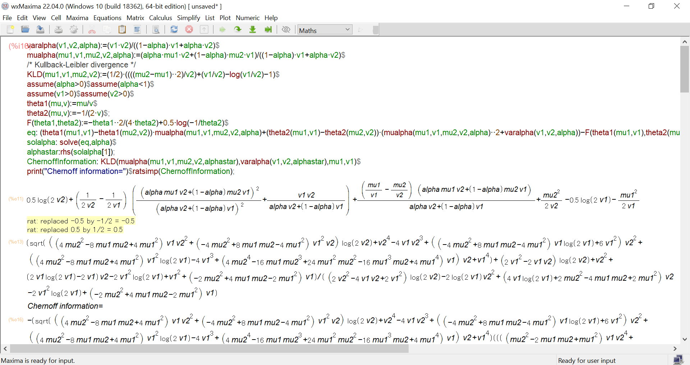
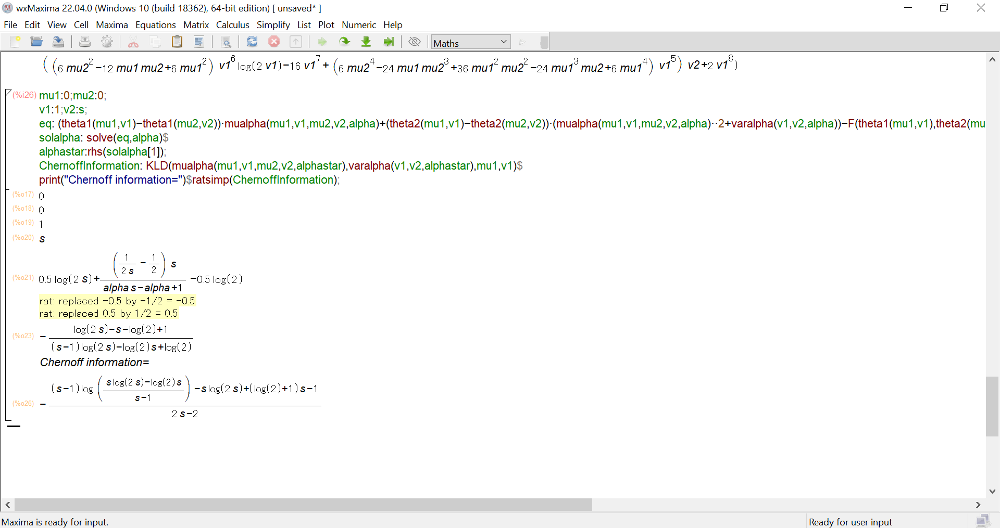

Closed-form Chernoff information between univariate normal distributions using Maxima
varalpha(v1,v2,alpha):=(v1*v2)/((1-alpha)*v1+alpha*v2)$
mualpha(mu1,v1,mu2,v2,alpha):=(alpha*mu1*v2+(1-alpha)*mu2*v1)/((1-alpha)*v1+alpha*v2)$
/* Kullback-Leibler divergence */
KLD(mu1,v1,mu2,v2):=(1/2)*((((mu2-mu1)**2)/v2)+(v1/v2)-log(v1/v2)-1)$
assume(alpha>0)$assume(alpha<1)$
assume(v1>0)$assume(v2>0)$
theta1(mu,v):=mu/v$
theta2(mu,v):=-1/(2*v)$;
F(theta1,theta2):=-theta1**2/(4*theta2)+0.5*log(-1/theta2)$
eq: (theta1(mu1,v1)-theta1(mu2,v2))*mualpha(mu1,v1,mu2,v2,alpha)+(theta2(mu1,v1)-theta2(mu2,v2))*(mualpha(mu1,v1,mu2,v2,alpha)**2+varalpha(v1,v2,alpha))-F(theta1(mu1,v1),theta2(mu1,v1))+F(theta1(mu2,v2),theta2(mu2,v2));
solalpha: solve(eq,alpha)$
alphastar:rhs(solalpha[1]);
ChernoffInformation: KLD(mualpha(mu1,v1,mu2,v2,alphastar),varalpha(v1,v2,alphastar),mu1,v1)$
print("Chernoff information=")$ratsimp(ChernoffInformation);

Particular case of centered normal distributions with scaled covariance matrices:
mu1:0;mu2:0;
v1:1;v2:s;
eq: (theta1(mu1,v1)-theta1(mu2,v2))*mualpha(mu1,v1,mu2,v2,alpha)+(theta2(mu1,v1)-theta2(mu2,v2))*(mualpha(mu1,v1,mu2,v2,alpha)**2+varalpha(v1,v2,alpha))-F(theta1(mu1,v1),theta2(mu1,v1))+F(theta1(mu2,v2),theta2(mu2,v2));
solalpha: solve(eq,alpha)$
alphastar:rhs(solalpha[1]);
ChernoffInformation: KLD(mualpha(mu1,v1,mu2,v2,alphastar),varalpha(v1,v2,alphastar),mu1,v1)$
print("Chernoff information=")$ratsimp(ChernoffInformation);
